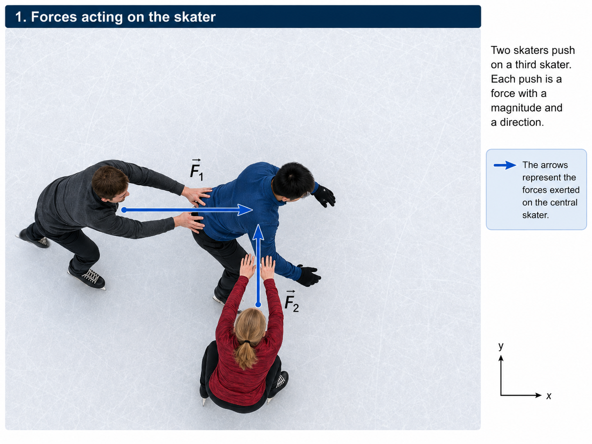
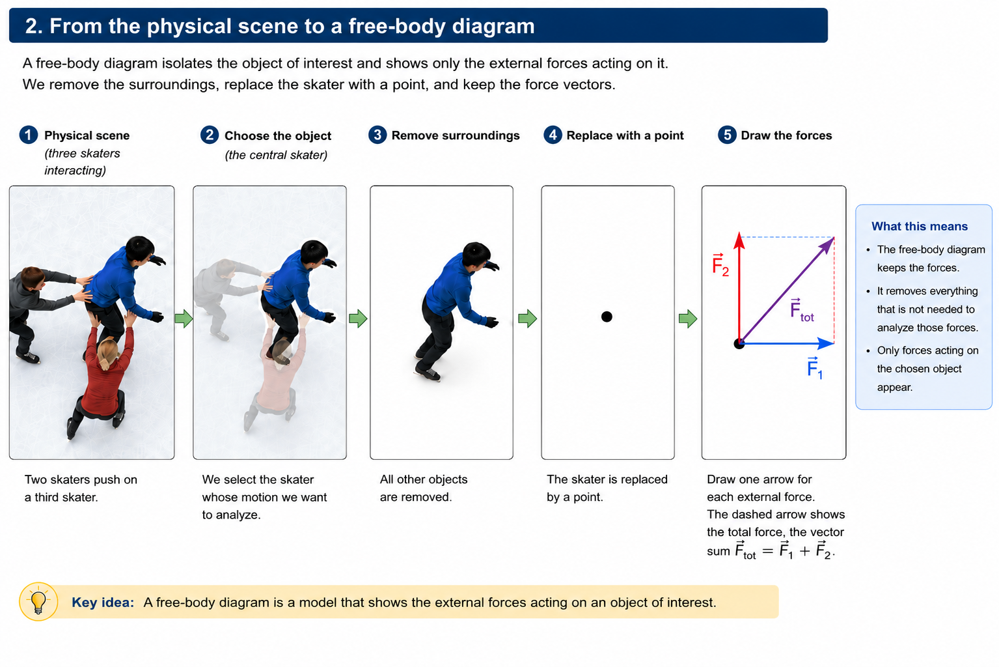
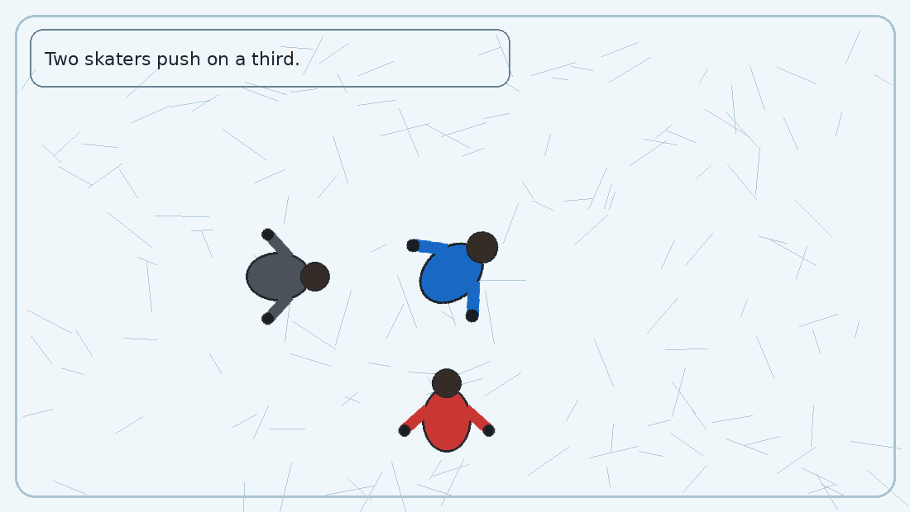
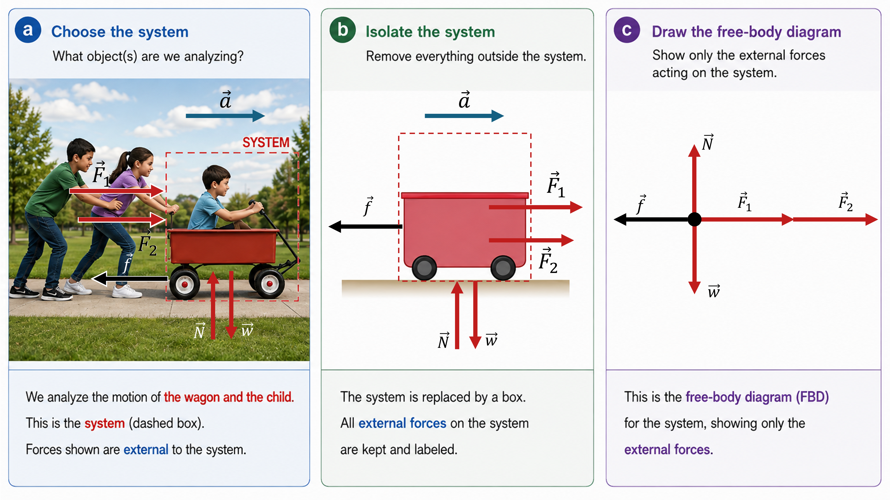
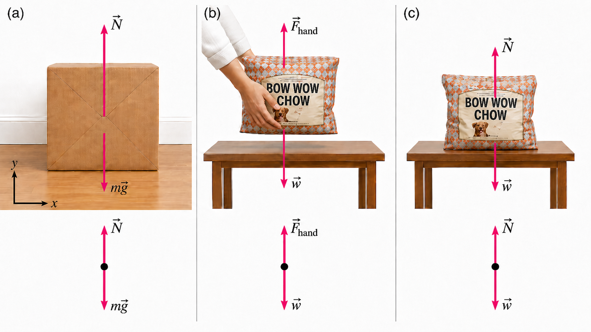

Dynamics: Force & Newton’s Laws#
Aug 12, 2026 | 7640 words | 51 min read
Chapter roadmap
Kinematics described how objects move; this chapter develops the physical ideas that explain why motion changes. You will use forces, free-body diagrams, and Newton’s laws to connect interactions with acceleration and to analyze common forces such as weight, normal force, and tension.
As you read, focus on three questions:
How do you choose a system and decide which forces are external to it?
How does the sum of the forces in each coordinate direction determine the acceleration in that direction?
How do Newton’s third law, normal force, and tension help you build and interpret a free-body diagram?
These ideas come together in a consistent problem-solving strategy that you will use in the worked examples, in-class exercises, and homework.
The study of motion is kinematics, but kinematics only describes the way objects move through their velocity and acceleration. Dynamics considers why objects change their motion through the forces that affect objects and systems. Newton’s laws of motion are the foundation of dynamics.
Isaac Newton’s laws of motion were only one part of the monumental work that made him legendary. His insights marked the transition from the Renaissance to the modern era and revolutionized the way people thought about the physical universe. For centuries, natural philosophers debated the nature of the universe through rules of logic, where a lot of credit was given to classical philosophers (e.g., Aristotle). Newton and Galileo both contributed a great deal to this change in thinking.
Galileo demonstrated how observation was the absolute determinant of truth, rather than “logical” argument. Galileo’s telescope showed the importance of observation, where he discovered moons orbiting Jupiter and other observations that falsified geocentrism. Galileo developed a foundational principle, which is now called Newton’s first law of motion. Newton expanded upon the work of Galileo and Kepler (i.e., his predecessors), which enabled him to develop laws of motion, a law of gravity, the method of calculus, and contributions to theories of light and color.
By the early 20th century, experiments showed that Newton’s laws of motion are a good approximation for objects moving at speeds much less than the speed of light and for objects much larger than atomic and molecular scales. Relativity becomes important at very high speeds, while quantum mechanics becomes important at very small scales. These discoveries established the limits of classical mechanics.
Development of Force Conceptually#
Dynamics is the study of the forces that cause objects and systems to change their motion. However, we need a working definition of force. Our intuitive definition describes contact forces that involve a direct push or pull. A push or pull has both a magnitude and direction, which makes a force a vector quantity. For example, a cannon exerts a strong force on a cannonball. Our everyday experience also gives us a good idea of how multiple forces add. If two ice skaters push on a third skater, we expect the total force to be a combination of the individual forces.
The two forces combine to produce a total force because force is a vector. Additionally, we find that forces add just like other vectors and can be represented by an arrow using either the head-to-tail graphical method or the analytical method developed in the previous chapter.

Two skaters push on a third skater from different directions. Each push is represented by a force vector, \(\vec{F}_1\) or \(\vec{F}_2\). Because force is a vector, each force has both a magnitude and a direction. Adapted from: OpenStax, College Physics 2e, Figure 4.3.#

A free-body diagram is created by isolating the object of interest and keeping only the forces acting on that object. Here, the central skater is replaced by a point and the two applied forces are drawn from that point. The faint translated vectors form a parallelogram, connecting force addition to the graphical vector-addition methods introduced earlier. The diagonal gives the total force, \(\vec{F}_{\rm tot}=\vec{F}_1+\vec{F}_2\). Adapted from: OpenStax, College Physics 2e, Figure 4.3.#

The two pushes act simultaneously on the skater. The force vectors can be combined graphically to determine the total force. While the interaction occurs, the skater’s motion changes in the direction associated with the combined forces. For now, the important idea is qualitative: forces describe interactions that can change an object’s motion. Adapted from: OpenStax, College Physics 2e, Figure 4.3.#
Figure {number} shows our first example of a free-body diagram (FBD), which is a technique used to simplify problems by illustrating all the external forces acting on a body using only arrows. The body is represented by a single isolated point (i.e., free body), where only external (outside) forces acting on the body are shown. We can ignore any internal forces within the body (object) that is acted on. FBDs are very useful in analyzing forces because they help us externalize the problem on paper instead of trying to solve the whole problem in our head. Drawing FBDs is not about your artistic ability; it is a technique that helps make problems easier to solve.
Newton’s First Law of Motion#
Experience shows us that an object at rest will remain at rest if left alone. Additionally, an object in motion tends to slow down and stop unless some effort is made to keep it moving. This second observation is more complicated by friction and air resistance. As in the example of an ice skater (i.e., a frictionless surface), the skater keeps moving once in motion until acted upon. Newton’s first law of motion describes how objects behave in the absence of external forces, under idealized conditions.
Newton’s First Law of Motion
A body at rest remains at rest or, if in motion, remains in motion at a constant velocity unless acted on by a net external force.
Newton’s first law states that there must be a cause (which is a net external force) for there to be any change in velocity (either a change in magnitude or direction). A net external force will be defined with Newton’s second law. An object sliding across a table or floor slows down due to the net force of friction acting on the object. If friction disappeared, would the object slow down?
The idea of cause and effect is crucial in accurately describing what happens. Consider an object sliding along a rough horizontal surface, where it quickly grinds to a halt. If we spray the surface with talcum powder, then the surface is smoother and the object slides further (e.g., shuffleboard). If we make the surface even smoother by rubbing oil on it (e.g., a bowling lane), then the object slides farther still. Extrapolating to a frictionless surface, we can imagine the object sliding in a straight line indefinitely. Friction is thus causing the slowing of the object (consistent with Newton’s first law) and is an external force.
Consider an air hockey table. When the air is turned on, it creates a nearly frictionless surface, and the puck glides long distances without slowing down. When the air is turned off, the puck slides only a short distance before friction slows it to a stop. If we know enough about the friction, we can develop a model that accurately predicts how quickly the object will slow down.
Newton’s first law is completely general and can be applied to objects sliding on tables, as well as blood pumped from the heart. Experiments have thoroughly verified that any change in velocity (in speed or direction) must be caused by a net external force. The idea of universal laws that generally apply to everything is a basic feature of all laws of physics. Identifying these laws came from recognizing patterns in nature. Another important idea was parsimony: a good model should not introduce additional assumptions or causes when they are unnecessary. This principle is often associated with the medieval philosopher William of Ockham and is commonly called Ockham’s razor.
Galileo challenged Aristotle’s proposal that the surrounding air continued to push a projectile after it left the thrower’s hand. Galileo could describe the motion of projectiles without requiring the air to keep pushing them through their flight. Newton carried this idea further by treating rest and uniform motion as equivalent states: what requires a cause is not motion itself, but a change in motion.
Inertia & Mass#
The property of a body to remain at rest (or to remain in motion with constant velocity) is called inertia. Newton’s first law is often called the law of inertia. Some objects have more inertia than others, which makes their motion harder to change. For example, it is more difficult to move a boulder than a basketball. But we cannot measure inertia directly.
Instead, we measure the mass as a proxy for inertia. Roughly speaking, mass is a measure of the amount of “stuff” (or matter) in something. The quantity of matter is determined by the atoms and molecules that make up the object. Mass does not vary with location. The mass of an object is the same on Earth as it is on the Moon. It is not practical to count all the atoms and molecules in an object, so masses are determined by comparison with a standard kilogram.
In May 2019, the definition of the kilogram was changed so that it is based on an exact value of Planck’s constant. A Kibble balance can realize this definition by comparing mechanical power with electrical power measured using quantum electrical standards.
Newton’s Second Law of Motion#
Newton’s second law of motion mathematically states the cause and effect relationship between force and changes in motion. Newton’s first law indicated that a net external force is required to change motion, while Newton’s second law gives us a general mathematical relationship between the net external force and the resulting acceleration. Newton’s second law relates the mass and acceleration of an object to the net external force.
Intuitively, we can see that a larger net force produces a larger acceleration for the same object. Recall the definition of acceleration as the change in velocity divided by a time interval. This means that a change in motion is equivalent to a change in velocity. Newton’s first law says that a net external force causes a change in motion and thus, a net external force causes acceleration.
An external force acts from outside the system (i.e., object, or collection of objects) of interest. For example, a system can consist of a wagon and a child in it that is being pushed by two other children. The two children supply external forces because their pushes can change the motion of the wagon and child.

Constructing a free-body diagram begins by choosing the system. In (a), the wagon and child are enclosed by the dashed boundary, while the two people pushing the wagon remain outside the system. The applied forces \(\vec{F}_1\) and \(\vec{F}_2\), friction \(\vec{f}\), the normal force \(\vec{N}\), and weight \(\vec{w}\) are external forces acting on the system. In (b), the physical details are removed while the same external forces are retained. In (c), the system is reduced to a point and only the external-force vectors remain, producing the free-body diagram. Adapted from: OpenStax, College Physics 2e, Figure 4.5.#
Internal forces act between elements of the system. The force that the child in the wagon applies to hang on is an internal force between elements of the system of interest. The internal forces occur in Newton’s third-law pairs and cancel when we consider the motion of the complete system, which gives us reason to ignore them. Only external forces affect the motion of a system according to Newton’s first law. Defining the boundaries of the system makes it easier to identify which forces are external.
Acceleration is directly proportional to (indicated mathematically with \(\propto\)) and in the same direction as the net (total) external force acting on a system. A smaller force causes a smaller acceleration and vice versa. The vertical forces are shown for completeness, where they must cancel. Otherwise the wagon’s motion would change along the vertical direction; hopefully not! These vertical forces are the weight \(\vec{w}\) of the wagon and child, along with the support of the ground \(\vec{N}\). There is a horizontal frictional force \(\vec{f}\) that opposes the applied force from the two children on the left. Frictional forces oppose relative motion, or attempted relative motion, between surfaces that are touching. We can simplify the scenario using a FBD with only the external forces, which add together to produce the net force \(\vec{F}_{\rm net}\).
We established that the acceleration \(\vec{a}\) is proportional to the net external force \(\vec{F}_{\rm net}\), where this is expressed mathematically as
and the \(\propto\) symbol means “proportional to”. When a quantity is proportional to another, it means that as one increases so does the other in proportion.
Going back to our intuition, we know that a larger net force can produce a larger acceleration. A more massive object has the opposite effect: for the same net force, it accelerates more slowly. This is where the mass (i.e., inertia) affects the motion of the object. The same net external force applied to a car produces a much smaller acceleration than when applied to a basketball. The relationship between magnitude of the acceleration \(a\) and the object’s mass \(m\) is given by
The acceleration of an object depends only on the net external force and the mass of the object. Combining the two proportionalities yields Newton’s second law of motion.
Newton’s Second Law of Motion
The acceleration of a system is directly proportional to and in the same direction as the net external force acting on the system, and inversely proportional to its mass.
In equation form, Newton’s second law of motion is
This is often written in the more familiar form
where the vector form retains all information concerning the direction of force and acceleration. The scalar form is useful when Newton’s second law is applied separately to each coordinate direction.
Summing Forces by Direction#
Newton’s second law involves the net force, which means that we must add together all of the external forces acting on the system. Because forces are vectors, we do this separately in each coordinate direction. For motion in two dimensions, Newton’s second law can therefore be written as
The symbol \(\sum\) means “sum of.” Thus, \(\sum F_x\) means to add all of the force components in the \(x\)-direction, while \(\sum F_y\) means to add all of the force components in the \(y\)-direction.
The signs of the forces depend on the coordinate system that we choose. If we define right and up as positive, then forces pointing to the right or upward are positive, while forces pointing to the left or downward are negative.
For the wagon example (Fig. {number}), the two children push toward the right with forces \(F_1\) and \(F_2\), while friction \(f\) acts toward the left. The horizontal force equation is therefore
The normal force \(N\) acts upward and the weight \(w\) acts downward. Since the wagon does not accelerate vertically,
Therefore,
Notice that \(\vec{F}_{\rm net}\) is not an additional force that we draw on the free-body diagram. It is the result of adding all of the external forces already acting on the system.
This gives us a general procedure for applying Newton’s second law:
Choose the system of interest.
Draw a free-body diagram showing all external forces acting on the system.
Choose convenient positive \(x\)- and \(y\)-directions.
If a force is angled, break it into \(x\)- and \(y\)-components.
Add the force components in each direction, including their signs.
Set each sum equal to the mass times the acceleration in that direction:
A system can accelerate in one direction while having zero acceleration in another. In the wagon example, the horizontal forces do not cancel, so the wagon accelerates horizontally. The vertical forces do cancel, so its vertical acceleration is zero.
Units of Force#
The units of force are determined from the units that make up \(\vec{F}_{\rm net} = m\vec{a}\) in terms of mass, length, and time. The SI unit of force is called the newton (abbreviated \(\rm N\)) and is the force needed to accelerate a \(1\ {\rm kg}\) mass at a rate of \(1\ {\rm m/s^2}\). We can see this by using the scalar form to get
The unit of force in the United States is the pound \((\rm lb)\), where you can convert between the units using \(1\ {\rm lb} = 4.45\ {\rm N}\).
Weight and the Gravitational Force#
As we’ve seen in prior chapters, an object accelerates toward the center of Earth when dropped from a height. Newton’s second law states that a net force on an object is responsible for its acceleration. Neglecting air resistance, the net force on a falling object is the gravitational force and is commonly called its weight \(\vec{w}\). Weight can be denoted as a vector because it has a direction (downward toward Earth’s center). The magnitude of the weight is given by \(w\). Galileo showed (quite unintuitively) that objects fall with the same acceleration \(g\) when air resistance is neglected. If you drop a hammer and a feather from the same height in a vacuum, they both hit the ground at the same time.
Consider an object with mass \(m\) falling downward toward Earth. It experiences only the downward force of gravity, which has a magnitude \(w\). We can use Newton’s second law to write \(F_{\rm net} = ma,\) but the only force acting on the object is gravity so that \(F_{\rm net} = w\). We know that the magnitude of the acceleration due to gravity is given by \(a = g\). Thus we can combine these relations together to determine the magnitude of the object’s weight \(w\).
Weight
The gravitational force on a mass \(m\) is given by
Since \(g = 9.81\ {\rm m/s^2}\) on Earth, the weight of a 1-kg object is \(9.81\ {\rm N}\). We can determine this mathematically by
The weight given above is just its magnitude. When solving problems with weight, you need to take the orientation of the coordinate system into account to get the magnitude of the respective components.
When the net external force is only due to gravity (i.e., its weight), we say that it is in free-fall. In the real world, when objects fall downward toward the Earth, there is always some upward force from air acting on the object. For sufficiently heavy or dense objects, the upward air resistance is negligible compared to the gravitational force.
Weight varies dramatically when an object is far from Earth’s surface. On the Moon, the acceleration due to gravity is about \(1/6\) times that of Earth, or \(1.625\ {\rm m/s^2}\). This means that a 1-kg mass has a weight of only about \(1.6\ {\rm N}\) on the Moon compared to the \(9.8\ {\rm N}\) on the Earth.
An object’s weight depends on the local gravitational field, which is usually dominated by a nearby massive body such as Earth, the Moon, or the Sun. Popular media can refer to weight differently. When they speak of “weightlessness” or “microgravity”, they are referring to cases where the person (or object) is in free-fall. The astronauts in the International Space Station (ISS) are not truly weightless; the gravitational force there is only about \({\sim}10\%\) smaller than it is at Earth’s surface.
Weight and mass are very different physical quantities. Mass (in \(\rm kg\)) is the quantity of matter, where it is not position dependent (i.e., you still have the same mass if you go to the Moon) and it does not vary in classical physics. Weight (in \(\rm N\)) depends on the strength of gravity at that location.
Newton’s Third Law of Motion#
Newton’s Third Law of Motion
Whenever one body exerts a force on a second body, the first body experiences a force that is equal in magnitude and opposite in direction to the force that it exerts.
This law represents a certain symmetry in nature, where forces always occur in pairs. One body cannot exert a force on another without experiencing a force itself. This is sometimes loosely referred to as “action-reaction”, where the force exerted is the action and the force experienced as a consequence is a reaction. Newton’s third law has practical uses, but we must be careful in defining our system.
Consider a swimmer pushing off from the side of a pool (see Figure {number}). She pushes against the pool wall with her feet and accelerates in the opposite direction. The wall exerts an equal and opposite force back on the swimmer. You might think that the two equal and opposite forces would cancel, but they do not because they act on different systems. Otherwise the horizontal forces would be balanced exactly and the swimmer would not move.
![Three-panel sequence showing how a free-body diagram is constructed for a swimmer pushing away from a pool wall. Panel a identifies the swimmer as the system and shows buoyancy upward, weight downward, the wall force on the swimmer to the left, the swimmer force on the wall to the right, and acceleration to the left. Panel b isolates the swimmer and retains only the external forces acting on the swimmer. Panel c replaces the swimmer with a point and shows the buoyant force, weight, and wall force that make up the swimmer's free-body diagram.](../_images/FBD_3rdLaw_diagram.png)
Constructing the swimmer’s free-body diagram begins by choosing the system. In (a), the swimmer is the system, while the water and pool wall are outside it. The swimmer pushes on the wall with \(\vec{F}_\text{feet on wall}\), and the wall pushes back on the swimmer with the equal-and-opposite force \(\vec{F}_\text{wall on feet}\); these forces act on different objects and therefore do not appear together on the same free-body diagram. In (b), the surroundings are removed and only the external forces acting on the swimmer are retained: the wall force, buoyant force \(\overrightarrow{BF}\), and weight \(\vec{w}\). In (c), the swimmer is reduced to a point to produce the final free-body diagram. Adapted from: OpenStax, College Physics 2e, Figure 4.9.#
In this case, there are two systems: (1) the swimmer or (2) the wall. If we select the swimmer to be the system of interest, then \(\vec{F}_\text{wall on feet}\) is an external force on this system and affects its motion. Intuitively we expect the swimmer to move in the direction of \(\vec{F}_\text{wall on feet}\). In contrast, the force \(\vec{F}_\text{feet on wall}\) acts on the wall and is not on our system of interest. Thus it is not included in the FBD for the swimmer. It could be included as a separate FBD for the wall as its own system. Note that the reaction to her push moves the swimmer in the desired direction.
Other examples of Newton’s third law are easy to find. When you walk across the floor, you exert a force backward on the floor, while the floor exerts an equal and opposite force forward on you. This forward force can accelerate you or help maintain your motion. A similar situation occurs for the wheels on your car.
Rockets move forward by expelling gas backward at high velocity. The rocket exerts a large backward force on the gas in the rocket’s combustion chamber and the gas exerts a large reaction force forward on the rocket, where this reaction force is called thrust. It is a common misconception that rockets push on the ground or the air behind them. Rockets work in a vacuum because their thrust comes from the interaction between the rocket and its exhaust; in fact, a rocket engine can produce slightly more thrust in a vacuum because there is no atmospheric pressure opposing the exhaust.
Interactive Simulation: Gravity Force Lab
Use this PhET simulation to visualize the gravitational force. Change the properties of the objects to see how it changes the force.
Normal, Tension, and other Forces#
Forces have many names including push, pull, thrust, lift, weight, friction, and tension. Typically, they are grouped depending on their source, how they are transmitted, or their effects.
Normal Force#
Weight is a force that acts at all times, but if it were the only vertical force we would all be sinking towards the center of the Earth. Since this does not happen, there must be a force that balances the weight in the opposite direction. Near Earth’s surface we can treat the surface as flat, where the weight of a box is represented by an arrow pointing downward. The balancing force is normal (i.e., perpendicular) to the surface and points upward in this situation. This force is called the normal force. Forces are vectors, which means we represent the normal force as \(\vec{N}\). Note that the magnitude of the normal force is \(N\), where the unit symbol for the newton is \(\rm N\). This difference is subtle, but the context usually provides a clear distinction by which one is meant.
For an object resting on a horizontal surface with no other vertical forces and no vertical acceleration, the vertical forces balance:
The first equation is the vector force balance, while the second gives the corresponding magnitudes.
How does an inanimate object (e.g., a table) support the weight of a mass placed on it? If you’re holding a bag of dog food, it makes intuitive sense why you can hold it up because you apply a force to counteract the weight. When the dog food is placed on the table, it actually sags slightly under the load. This is more noticeable with an especially heavy bag and weak table. The table exerts a restoring force much like a deformed spring. The greater the deformation, the greater the restoring force. The table applies only enough restoring force to support the weight of the bag.

Three examples illustrate how different interactions can produce the upward force that balances an object’s weight. In (a), the floor exerts the normal force \(\vec{N}\) on a box. In (b), a person’s hands exert an upward force \(\vec{F}_{\rm hand}\) on a bag of dog food. In (c), the table exerts the normal force \(\vec{N}\) on the bag. The free-body diagram beneath each scene keeps only the external forces acting on the object. Adapted from: OpenStax, College Physics 2e, Figure 4.11.#
On an inclined surface, the normal force can be less than the weight because it balances only the component of the weight perpendicular to the surface. When an object rests on an incline that makes an angle \(\theta\) with the horizontal, the force of gravity acting on the object is divided into two components:
a force acting perpendicular to the plane, \(w_y\), and
a force acting parallel to the plane, \(w_x\).
When there is no acceleration perpendicular to the plane, the normal force \(\vec{N}\) is equal in magnitude and opposite in direction to the perpendicular component \(w_y\). The component parallel to the plane, \(w_x\), can cause the object to accelerate down the incline (see Fig. {number}). In the frictionless case shown, \(w_x\) is the unbalanced force that allows the acceleration to occur, while \(w_y\) is balanced by the normal force \(N\).

The coordinate system is chosen so that the \(x\)-axis is parallel to the inclined surface. The angle \(\beta\ (= 90^\circ - \theta)\) is complementary to \(\theta\). Adapted from: OpenStax Figure 5.23.#
Angles in a Triangle
How do we know that the angle \(\theta\) given in Fig. {number} is the same in both places?
Let’s assume that they are different:
\(\theta_1\) is the angle between \(\vec{w}\) and \(\vec{w}_y\),
\(\theta_2\) is the angle between the horizontal surface and incline plane.
The angle between \(\vec{w}\) and \(\vec{w}_x\) is \(\beta = 90^\circ - \theta_1\) because \(\vec{w}_x\) and \(\vec{w}_y\) are perpendicular. The inclined surface also makes a triangle, with 3 angles that sum to \(180^\circ\), or
We can solve for \(\beta\) in terms of \(\theta_2\) and substitute into the equation containing \(\theta_1\),
With a little geometry, we showed that \(\theta_1 = \theta_2 = \theta\).
Be careful when resolving the weight into components. Normally when the \(x\)-component of a force \(\vec{F}\) is resolved, we find that \(F_x = F\cos{\theta}\). However, in this case we are using the complementary angle \(\beta = 90^\circ - \theta\) to resolve the \(w_x\). Using the red vectors in Fig. {number}, we have
Tension#
A tension force acts along the length of a flexible connector, such as a rope or cable. The word “tension” comes from the Latin word “to stretch”, which is why the flexible cords that carry muscle forces are called tendons. A flexible connector can exert a pull only along its length, so the force it transmits is directed along the connector.
Consider a person holding a mass \(m\) on a rope, where the mass is held stationary. Because the mass is held stationary, its acceleration is zero and therefore \(\vec{F}_{\rm net}=0\). The only external forces acting on the mass are its weight \(\vec{w}\) and the tension \(\vec{T}\) supplied by the rope. Their vectors point in opposite directions, so the magnitude of the tension \(T\) must equal the magnitude of the weight \(w\). Thus, we have
where \(T\) and \(w\) are the magnitudes of the tension and weight, respectively. We consider only the tension acting on the mass \(m\), which is upwards and has a positive sign, where the weight acts downwards and carries a negative sign. Just as you would expect
For a \(5.0\)-kg mass (and neglecting the mass of the rope), we see that
If we cut the rope and insert a spring, the spring would extend a length corresponding to a force of \(49\ {\rm N}\).
Flexible connectors are often used to transmit forces around corners (e.g., a hospital traction system, a finger joint, or a bicycle brake cable). For an ideal massless connector passing over frictionless supports or pulleys, the tension is transmitted undiminished. Only its direction changes, and it is always parallel to the flexible connector.
Large Tension#
A surprisingly large tension can develop when a force is applied perpendicular to a taut rope or other flexible connector (see Fig. {number}). A tightrope walker provides a useful example. The walker’s weight provides a downward load near the center of the rope, while the tension in the two sides of the rope pulls upward and outward on the loaded point.
The weight of a tightrope walker causes a wire to sag by \(5.0^\circ\). The system of interest here is the point in the wire at which the tightrope walker is standing. Source: OpenStax College Physics, Figure 4.16.#
Suppose the tightrope walker is standing still. Treat the walker and the small section of rope beneath them as the system. Because this system is not accelerating, the forces must balance in both the horizontal and vertical directions. We divide the tension into the forces from the right and left sections of the rope, \(\vec{T}_R\) and \(\vec{T}_L\).
The vertical components, \(T_{Ry}\) and \(T_{Ly}\), together support the walker’s weight \(w\).
The horizontal components, \(T_{Rx}\) and \(T_{Lx}\), point in opposite directions and cancel.
The force balance is therefore
Assume the rope makes the same angle \(\theta\) with the horizontal on each side of the walker. The horizontal components are
Because these horizontal components must be equal,
which gives
For an ideal lightweight rope, the tension has the same magnitude throughout the rope. The two sides therefore each pull on the walker with the same tension \(T\).
Now consider the vertical direction. Each side provides an upward component
Both sides together support the walker’s weight, so
Since \(w=mg\),
This result explains why tightropes, clotheslines, cables, and similar connectors can experience very large tensions. As the rope becomes more nearly horizontal, \(\theta\) becomes smaller and \(\sin{\theta}\) decreases. The tension must then increase so that its small vertical components can still support the downward force.
More generally, if a perpendicular force \(F_\perp\) is applied at the midpoint of a flexible connector,
As \(\theta\rightarrow0\), the required tension becomes extremely large. A perfectly horizontal flexible connector supporting a downward force would require infinite tension in this idealized model. This is why real ropes and cables always sag at least slightly under their own weight or any additional load.
Applying Newton’s Laws: A Problem-Solving Strategy#
We have introduced several different forces and all three of Newton’s laws, but most dynamics problems use the same basic approach. The difficulty is usually not choosing a new equation. Instead, we need to determine what system we are studying, what forces act on it, and how those forces combine in each direction.
Newton’s second law provides the connection between the forces and the resulting motion,
The important part is building the equations on the left-hand side correctly. A free-body diagram gives us a visual inventory of the external forces, while the coordinate system tells us whether each force component is positive or negative.
A General Strategy#
We can organize most force problems using the following steps:
Choose the system. Decide which object, or collection of objects, we want to analyze.
Identify the external forces. Determine which interactions cross the boundary of the system.
Draw a free-body diagram. Replace the system with a point and draw only the external forces acting on it.
Choose the coordinate directions. Define which directions are positive. Whenever possible, choose axes that simplify the forces or the motion.
Break angled forces into components. A force that is not along one of the coordinate axes may contribute to both the \(x\)- and \(y\)-directions.
Determine the acceleration in each direction. Ask whether the velocity is changing along \(x\) or \(y\).
Sum the forces separately in each direction.
Solve for the unknown quantity and check the result. The units, sign, direction, and approximate size of the answer should agree with the physical situation.
The Free-Body Diagram Comes Before the Equations
Do not begin a force problem by searching for numbers to substitute into \(F=ma\). First decide on the system and construct the free-body diagram. The equations should come directly from the forces shown on that diagram.
The net force is not another force that should be added to the free-body diagram. It is the result of adding together the external forces already shown.
Acceleration Tells Us What the Force Sum Must Do#
Before writing an equation for a particular direction, determine whether the system accelerates in that direction.
If the acceleration is zero, then
or
depending on the direction being considered.
An acceleration of zero does not require the object to be stationary. An object moving with constant velocity also has zero acceleration and therefore zero net force.
If the system accelerates in a direction, then the forces along that direction do not cancel. For example,
This distinction becomes especially useful when a system accelerates in one direction but not another. A wagon may accelerate horizontally while remaining on the ground vertically. In that case,
The same reasoning applies to more complicated systems.
Multiple Forces in Two Dimensions#
When several forces act at different angles, Newton’s second law is still applied independently to each direction. The free-body diagram may look complicated, but each force contributes only through its \(x\)- and \(y\)-components.
Suppose a system has several external forces. The horizontal equation has the general form
while the vertical equation is
The signs come from the coordinate system that we choose. If right and up are positive, then a force pointing left has a negative \(x\)-component and a force pointing downward has a negative \(y\)-component.
This is why choosing the coordinate system is an important part of the model rather than just a mathematical detail.
Example Problem: Different Tensions at Different Angles#
Example Problem: Different Tensions at Different Angles
The Problem
A \(15\ {\rm kg}\) traffic light is suspended by two lightweight wires. The left wire makes an angle of \(30^\circ\) above the horizontal and the right wire makes an angle of \(45^\circ\) above the horizontal. Find the tension in each wire.
Show worked solution
The Model
The traffic light is the system. We neglect the masses of the wires and define the \(x\)-axis horizontally with \(+x\) to the right and the \(y\)-axis vertically with \(+y\) upward. The traffic light is stationary, so \(a_x=a_y=0\). The known quantities are \(m=15\ {\rm kg}\), \(\theta_1=30^\circ\), and \(\theta_2=45^\circ\). The unknowns are the tension magnitudes \(T_1\) and \(T_2\).
A traffic light is supported by two wires at different angles. The figure shows the physical system, the free-body diagram, and the components of the two tension forces. Source: OpenStax, College Physics 2e, Figure 4.22.#
The Math
Because there is no horizontal acceleration, the horizontal components of the tensions must cancel:
The vertical components of the two tensions must together support the weight of the traffic light:
Substituting the horizontal-force relationship into the vertical equation gives
The left-wire tension is therefore
The right-wire tension follows from the horizontal-force relationship:
The Conclusion
The two wire tensions are approximately \(T_1=1.1\times10^2\ {\rm N}\) and \(T_2=1.3\times10^2\ {\rm N}\). They are not equal because the wires make different angles with the horizontal. The horizontal components must cancel while the vertical components together support the traffic light’s weight, which is consistent with the stationary model.
Adapted from OpenStax, College Physics 2e, Example 4.8.
Example Problem: What Does the Bathroom Scale Read in an Elevator?#
Example Problem: What Does the Bathroom Scale Read in an Elevator?
The Problem
A \(75\ {\rm kg}\) person stands on a bathroom scale in an elevator. What does the scale read (a) when the elevator accelerates upward at \(1.2\ {\rm m/s^2}\) and (b) when the elevator moves upward at a constant speed of \(1\ {\rm m/s}\)?
Show worked solution
The Model
The person is the system. We define a vertical \(y\)-axis with \(+y\) upward. The two external forces acting on the person are the upward normal force \(N\) from the scale and the downward weight \(w=mg\). The scale exerts an upward normal force \(N\) on the person. By Newton’s third law, the person exerts an equal-magnitude downward force on the scale, so the scale reading has magnitude \(N\). For part (a), \(a_y=+1.2\ {\rm m/s^2}\). For part (b), the elevator has constant velocity, so \(a_y=0\).
A person stands on a scale in an elevator. The free-body diagram for the person contains only the upward force from the scale and the downward weight. Source: OpenStax, College Physics 2e, Figure 4.23.#
The Math
Newton’s second law in the vertical direction gives
Using \(w=mg\) and solving for the normal force gives the general result
For part (a), the elevator accelerates upward, so the scale reading is
For part (b), constant velocity means zero acceleration. The scale reading becomes
The Conclusion
The scale reads approximately \(8.3\times10^2\ {\rm N}\) while the elevator accelerates upward and \(7.4\times10^2\ {\rm N}\) while it moves at constant speed. The larger reading during upward acceleration is required because the scale must both support the person’s weight and provide the upward net force. At constant velocity the acceleration is zero, so the normal force returns to the person’s ordinary weight.
Adapted from OpenStax, College Physics 2e, Example 4.9.
Connecting Dynamics Back to Kinematics#
Dynamics tells us what causes acceleration, while kinematics tells us how acceleration changes velocity and position. Many real problems require both ideas.
The connection is
Sometimes a problem gives the forces and asks for the resulting motion. In that case, Newton’s second law is used first to determine the acceleration, followed by the kinematics equations.
Other problems give information about the motion and ask what force produced it. In those cases, we work in the opposite direction: use kinematics to determine the acceleration and then use Newton’s second law to determine the force.
Example Problem: What Force Must a Soccer Player Exert to Reach Top Speed?#
Example Problem: What Force Must a Soccer Player Exert to Reach Top Speed?
The Problem
A \(70\ {\rm kg}\) soccer player starts from rest and accelerates forward, reaching a speed of \(8.0\ {\rm m/s}\) in \(2.5\ {\rm s}\). (a) What is the player’s average acceleration? (b) What average force does the player exert backward on the ground to produce this acceleration? Neglect air resistance.
Show worked solution
The Model
The player is the system. We define the horizontal \(x\)-axis along the direction of the run, with \(+x\) forward. The player starts from rest, so \(v_0=0\), and reaches \(v_f=8.0\ {\rm m/s}\) in \(\Delta t=2.5\ {\rm s}\). The player’s mass is \(m=70\ {\rm kg}\). Air resistance is neglected, so the horizontal ground force is the external force responsible for the player’s forward acceleration. Newton’s third law relates the forward force of the ground on the player to the backward force of the player on the ground.
The Math
The average acceleration follows from the change in velocity divided by the elapsed time:
Newton’s second law then gives the magnitude of the horizontal net force on the player:
The ground therefore exerts approximately \(2.2\times10^2\ {\rm N}\) forward on the player. Newton’s third law tells us that the player exerts a force of the same magnitude backward on the ground.
The Conclusion
The player’s average acceleration is \(3.2\ {\rm m/s^2}\). To produce that acceleration, the ground exerts an average force of about \(2.2\times10^2\ {\rm N}\) forward on the player, so the player exerts about \(2.2\times10^2\ {\rm N}\) backward on the ground. This example connects kinematics, Newton’s second law, and Newton’s third law in the same physical situation.
Adapted from OpenStax, College Physics 2e, Example 4.10.
Putting It All Together
Most problems involving Newton’s laws can be organized using the same sequence:
Situation \(\rightarrow\) System \(\rightarrow\) Free-body diagram \(\rightarrow\) Coordinate directions \(\rightarrow\) Sum the forces \(\rightarrow\) Solve \(\rightarrow\) Check
The equations should follow from the physical model rather than the other way around. If the free-body diagram and coordinate directions are correct, writing
usually becomes the straightforward part of the problem.
The final step is always to ask whether the answer makes physical sense. Check the units, sign, direction, and approximate magnitude. A force should have units of newtons, an acceleration should have units of \({\rm m/s^2}\), and the direction of the net force should agree with the direction of the acceleration. These checks will not prove that a solution is correct, but they can quickly reveal many common mistakes.
In-Class Exercises#
Instructions#
You will use the final 20 minutes of class to begin the problems assigned for that class day. First, you must make a serious attempt on each assigned problem independently. After developing your own approach, you may compare ideas and discuss the problems with other students.
Each student must prepare and submit an individual solution. Organize each quantitative solution using the Problem–Model–Math–Conclusion format. Show your reasoning, equations, substitutions with units, and interpretation of the result. A numerical answer without supporting work is not a complete solution.
Open this page in Google Colab so you can easily copy the problems to the template without retyping them.
Export your completed Jupyter notebook as a PDF and submit the PDF to D2L by 11:59 p.m. CT on the day of class. The PDF filename must follow the format LastName_ChXX_SetY.pdf, where XX is the two-digit chapter number and Y is the problem-set number.
Make your own copy before beginning
A read-only Jupyter notebook template is available on D2L. Before entering any work, you must make your own editable copy of the notebook by selecting Save a copy in Drive.
Changes made directly to the read-only template cannot be saved. It does not matter how much work you enter: if you have not made your own copy, your changes will be lost. Confirm that you can rename and save your copy before beginning the problems.
Problems#
Problem 1
Suppose two children push horizontally, but in exactly opposite directions, on a third child in a wagon. The first child exerts a force of \(75\ {\rm N}\), the second a force of \(90\ {\rm N}\), friction is \(12\ {\rm N}\), and the mass of the third child plus wagon is \(23\ {\rm kg}\).
a. What is the system of interest if the acceleration of the child in the wagon is to be calculated?
b. Draw a free-body diagram, including all forces acting on the system.
c. Calculate the acceleration.
d. What would the acceleration be if friction were \(15\ {\rm N}\)?
Problem 2
The weight of an astronaut plus their space suit on the Moon is only \(250\ {\rm N}\). How much do they weigh on Earth? What is the mass on the Moon? On Earth?
Problem 3
(a) Calculate the tension in a vertical strand of spider web if a spider of mass \(8.00 \times 10^{-5}\ {\rm kg}\) hangs motionless on it. (b) Calculate the tension in a horizontal strand of spider web if the same spider sits motionless in the middle of it much like the tightrope walker in Fig.
{number}. The strand sags at an angle of \(12^\circ\) below the horizontal. Compare this with the tension in the vertical strand (find their ratio).
Problem 4
Calculate the force a \(70\)-kg high jumper must exert on the ground to produce an upward acceleration \(4.0\) times the acceleration due to gravity. Explicitly show how you follow the steps in the Problem-Solving Strategy for Newton’s laws of motion.
Problem 5
A nurse pushes a cart by exerting a force on the handle at a downward angle \(35^\circ\) below the horizontal. The loaded cart has a mass of \(28\ {\rm kg}\), and the force of friction is \(60\ {\rm N}\). (a) Draw a free-body diagram for the system of interest. (b) What force must the nurse exert to move at a constant velocity?
Problem 6
A \(35\)-kg dolphin decelerates from \(12.0\) to \(7.50\ {\rm m/s}\) in \(2.30\ {\rm s}\) to join another dolphin in play. What average force was exerted to slow him if he was moving horizontally? (The gravitational force is balanced by the buoyant force of the water.)
Problems adapted from OpenStax, College Physics 2e, Chapter 4 Problems & Exercises.
Homework#
Instructions#
Homework assignment
The homework is designed to give you regular practice applying the ideas developed in this chapter. A read-only Jupyter notebook template for the assignment is available on D2L. Before entering any work, you must make your own editable copy of the notebook. Changes made directly to the read-only template cannot be saved, so confirm that you can rename and save your copy before beginning.
There are two types of homework questions:
Conceptual questions: Copy the question into your notebook and answer it under a heading titled The Conclusion. Your response should be a paragraph that directly answers the question and explains the physical reasoning behind your answer. A Model or Math section is not required unless the question genuinely requires a calculation.
Quantitative questions: Copy the problem into your notebook and organize your solution using the Problem–Model–Math–Conclusion format. Identify the physical situation, assumptions, knowns, unknowns, and sign convention in the Model; develop and apply the necessary equations in the Math; and state, interpret, and check your result in the Conclusion. Include units in numerical substitutions.
The worked examples on the course webpage provide examples of the reasoning and solution style expected in your homework.
Don’t wait until the night it is due
Homework is much easier to manage when you complete a couple of problems at a time as you work through the chapter. This gives you time to identify concepts that you do not understand and ask questions before the due date. Trying to complete the entire assignment the night it is due usually leaves little time to diagnose mistakes or revisit the course material.
Submission
When your assignment is complete, export the Jupyter notebook as a PDF and submit the PDF to D2L by 11:59 p.m. CT on the due date.
Name your submitted file using the format LastName_ChXX_HW.pdf. Replace LastName with your last name and XX with the two-digit chapter number. For example, homework for Chapter 2 submitted by Jane Smith would be Smith_Ch02_HW.pdf.
Before submitting, open the PDF and make sure that all questions, equations, figures, and solutions are visible and readable.
Conceptual Questions#
Problem 1
A rock is thrown straight up. What is the net external force acting on the rock when it is at the top of its trajectory?
Problem 2
Describe a situation in which one system exerts a force on another and, as a consequence, experiences a force that is equal in magnitude and opposite in direction. Which of Newton’s laws of motion apply?
Quantitative Questions#
Problem 3
Suppose a \(60\)-kg gymnast climbs a rope. (a) What is the tension in the rope if they climb at a constant speed? (b) What is the tension in the rope if they accelerate upward at a rate of \(1.50\ {\rm m/s^2}\)?
Problem 4
A \(1100\)-kg car pulls a boat on a trailer. (a) What total force resists the motion of the car, boat, and trailer if the car exerts a \(1900\)-N force on the road and produces an acceleration of \(0.550\ {\rm m/s^2}\)? The mass of the boat plus trailer is \(700\ {\rm kg}\). (b) What is the force in the hitch between the car and the trailer if \(80\%\) of the resisting forces are experienced by the boat and trailer?
Problem 5
A flea jumps by exerting a force of \(1.20 \times 10^{-5}\ {\rm N}\) straight down on the ground. A breeze blowing on the flea parallel to the ground exerts a force of \(0.500 \times 10^{-6}\ {\rm N}\) on the flea. Find the direction and magnitude of the acceleration of the flea if its mass is \(6.00 \times 10^{-7}\ {\rm kg}\). Do not neglect the gravitational force.
Problem 6
A \(76.0\)-kg person is being pulled away from a burning building as shown in Fig.
{number}. Calculate the tension in the two ropes if the person is momentarily motionless. Include a free-body diagram in your solution.
A person is supported by two ropes while being pulled away from a burning building. The tension \(\vec{T}_1\) acts along the more vertical rope, while \(\vec{T}_2\) acts along the rope held by the rescuer. The person’s weight \(\vec{w}\) acts downward. Source: OpenStax College Physics, Figure 4.40.#
Problems adapted from OpenStax, College Physics 2e, Chapter 4 Problems & Exercises.